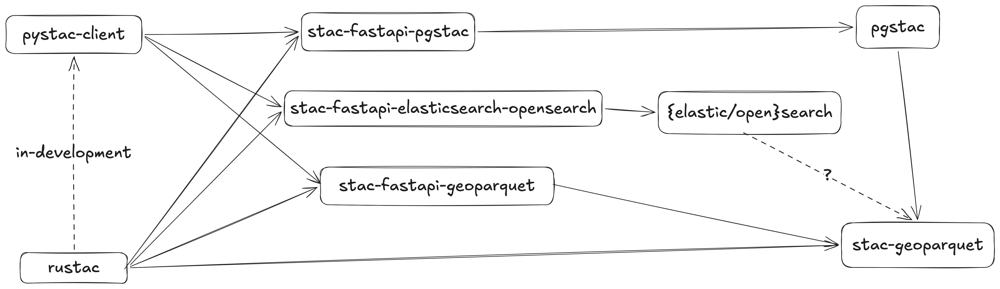
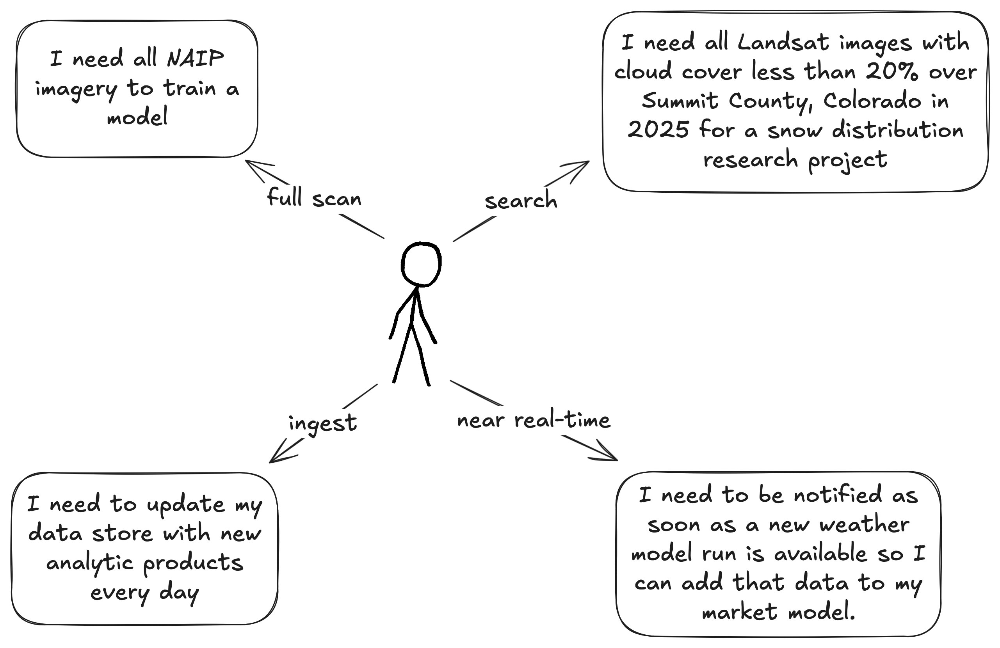
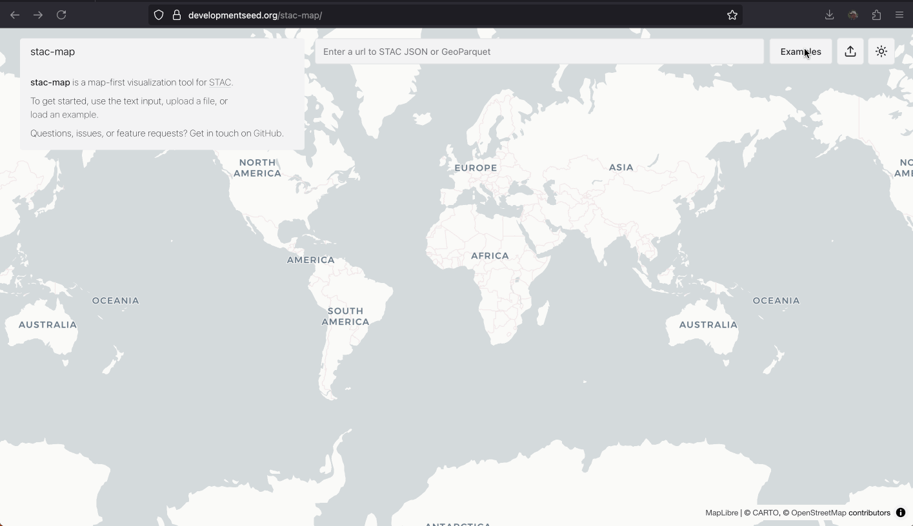

stac-geoparquet and eoAPI
 +
+

stac-geoparquet specification

Initial commit May 2022 by Tom Augspurger
stac-geoparquet in eoAPI


Uses of STAC

Modes and uses
| Use | Static | API | stac-geoparquet |
|---|---|---|---|
| Search | ❌ | ✅ | ⚠️ |
| Full scan | ⚠️ | ⚠️ | ✅ |
| Ingest | ✅ | ⚠️ | ⚠️ |
| Near realtime | ⚠️ | ❌ | ⚠️ |
| Cost and complexity | ✅ | ⚠️ | ✅ |
| Maturity | ✅ | ✅ | ⚠️ |
The rise of the machines
Large, statically hosted datasets that rich text descriptions can be quite useful when fed to a robot.

By https://eleven.com.au/futurama-characters.html, Fair use, Link
{kind=link}
Tooling
| Name | Description |
|---|---|
| stac-utils/stac-geoparquet | Original reference implementation, streaming, snapshotting pgstac, Delta Lake |
| stac-utils/rustac (née stac-rs) | Lower-level, Python and CLI, async, STAC search directly on stac-geoparquet files |
| stac-utils/stac-fastapi-geoparquet | Search and discovery for stac-geoparquet files through an HTTP API (experimental) |
| DuckDB | Reading, querying, and re-partitioning |
| GeoPandas | You know it, you love it |
stac-map

Visualize stac-geoparquet in your browser, uses Deck.gl and DuckDB.